<mat-sidenav-container class="sidenav-container">
  <mat-sidenav #drawer class="sidenav" fixedInViewport [attr.role]="(isHandset$ | async) ? 'dialog' : 'navigation'"
    [mode]="(isHandset$ | async) ? 'over' : 'side'" [opened]="(isHandset$ | async) === true">
    <mat-toolbar *ngIf="!isAuthenticated">
      <button mat-button [routerLink]="['/login']" routerLinkActive="router-link-active">
        <mat-icon>exit_to_app</mat-icon>
        <span>Entrar</span>
      </button>
    </mat-toolbar>
    <mat-nav-list *ngIf="isAuthenticated">
      <a mat-list-item href="#">Link 1</a>
      <a mat-list-item href="#">Link 2</a>
      <a mat-list-item href="#">Link 3</a>
    </mat-nav-list>
  </mat-sidenav>
  <mat-sidenav-content>
    <mat-toolbar class="color-nav mat-elevation-z8"> 
      <button type="button" aria-label="Toggle sidenav" mat-icon-button (click)="drawer.toggle()"
        *ngIf="(isHandset$) || (isHandset$ | async)">
        <mat-icon aria-label="Side nav toggle icon">menu</mat-icon>
      </button>
      <span class="fill-remaining-space"></span>
      <button type="button" mat-button>
        <a [routerLink]="['/']" routerLinkActive="router-link-active">
          
        </a>
      </button>
      <span class="fill-remaining-space"></span>
      <button type="button" mat-icon-button>
        <span>
          <a href="https://github.com/andersori/led" target="_blank">
            
          </a>
        </span>
      </button>
    </mat-toolbar>
    <app-main-content></app-main-content>
  </mat-sidenav-content>
</mat-sidenav-container>